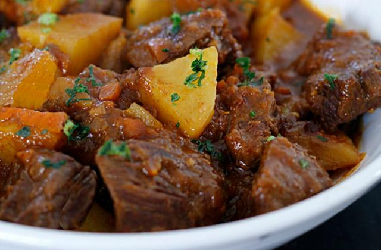

CARNE DE PANELA SIMPLES
Ingredientes:
- 800g de carne da sua preferencia.
- 1 cebola média picada
- 2 dente de alho picado
- 1/2 copo de água
- 1 fio de óleo ou azeite
- Coentro ou salsa quantidade da sua preferencia
- Sal e pimenta do reino a gosto
MODO DE PREPARO
- Corte a carne em cubos grandes e tempere com sal,pimenta e alho picado.
- Leve ao fogo a panela de pressão com um pouco de óleo ou azeite.
- Quando estiver quente coloque a cebola picada e refogue até murchar
- Ajeite na panela os pedaços de carne já temperados e tampe. Deixe cozinhar por 10 minutos no fogo médio para baixo após pegar a pressão.
- Após o tempo indicado retire a panela do fogo, espere sair a pressão e abra. Adicione o meio copo de água e volte com a panela para o fogo. Após começar a chiar conte mais 15 minutos de cozimento.
- Depois do tempo indicado, tire novamente a pressão e, se ainda tiver um pouquinho de água, deixe em fogo alto sem tampar até esse caldo secar e a carne dourar. Está pronta a receita de carne de panela simples e saborosa!
BIFE ACEBOLADO

Ingredientes:
- 400g de contrafilé em bifes
- 1 colher de sopa de óleo
- 1 cebola média cortada em fatias grossas
- 1/2 xícara de chá de água
- 1 colher de sopa de vinagre de vinho branco
MODO DE PREPARO
- Coloque os bifes em uma tigela e tempere a gosto
- Em uma frigeira grande coloque metade do óleo e aqueça em fogo alto disponha metade dos bifes e frite-os por 2 minutos cada lado, repondo óleo quando necessário.
- Na mesa frigideira,refogue a cebloa por 3 minutos adicione água e o vinagre e mexa incorporando os resíduos do fundo da frigideira depois misture tudo e sirva.